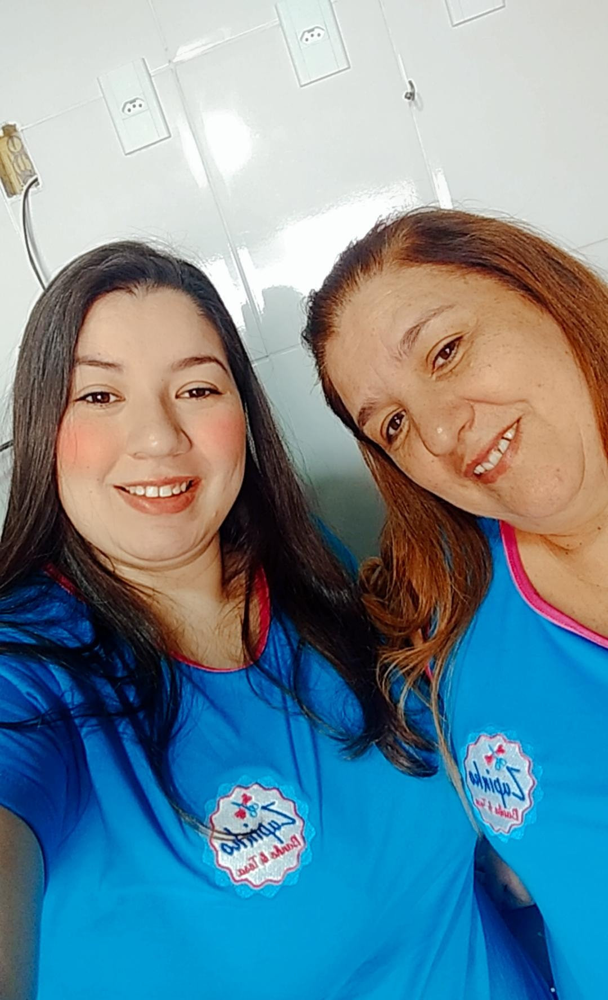

Meu nome é Pamela, tenho 28 anos, sou cristã e todo dia disposta a buscar minha melhor versão em tudo que faço.
Trabalhei muitos anos com CLT, porém em 2018 decidi montar minha própria empresa junto com minha mãe.


Tenho uma família abençoada e sou casada com um marido incrível. Por enquanto, temos dois doguinhos lindos e travessos. Há 3 anos ele veio trabalhar comigo e hoje juntos seguimos no negócio da área pet.